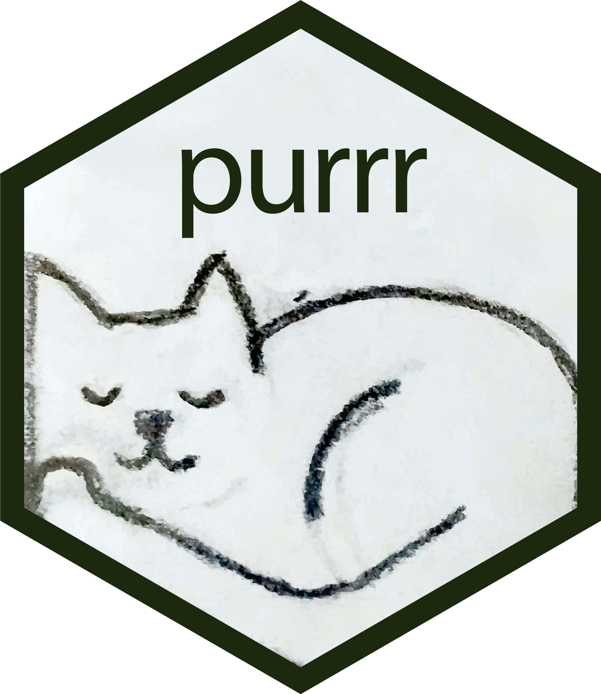
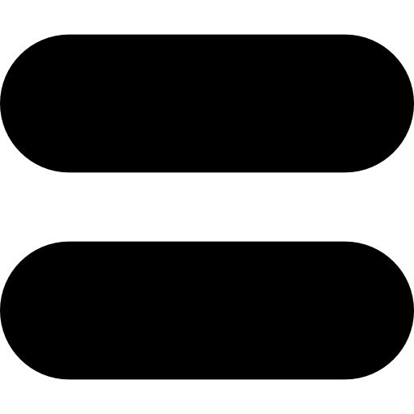
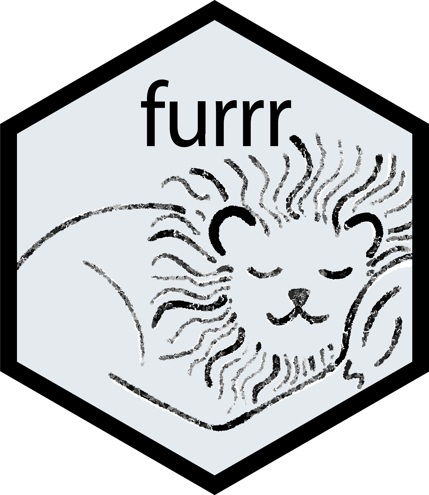
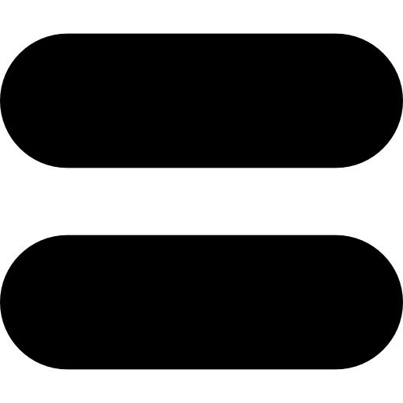
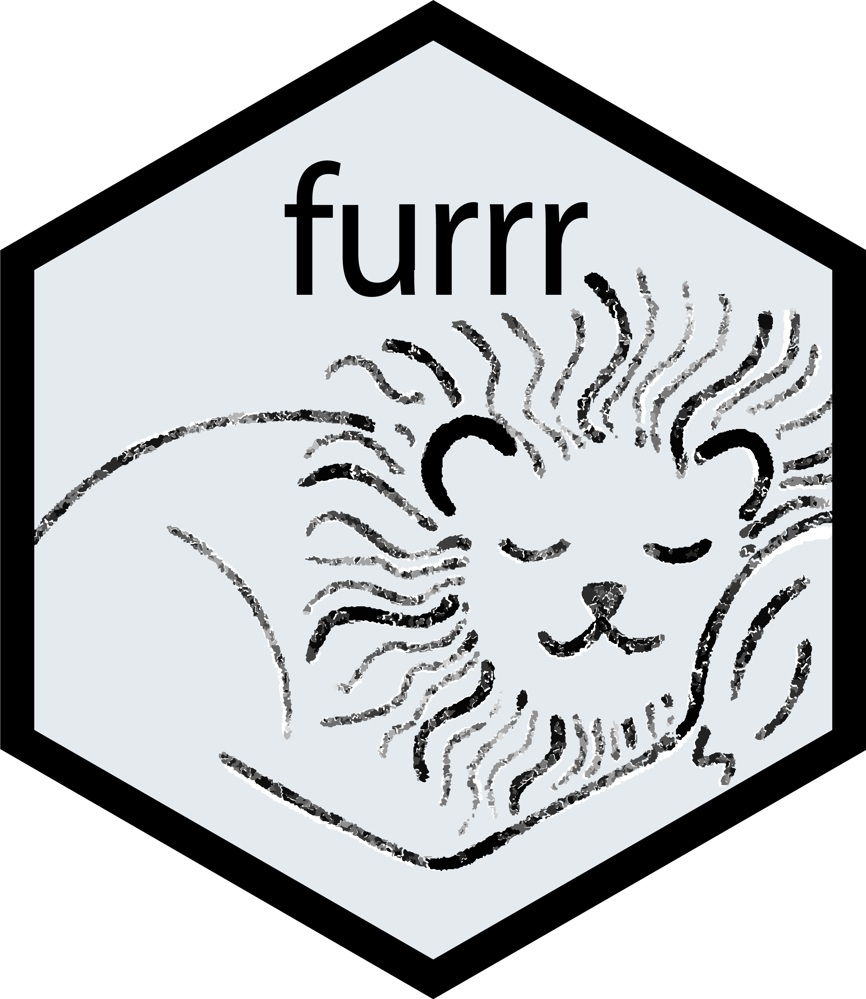

You love {purrr}, but have you tried speeding up things {furrr}-ther?
Roberto Villegas-Diaz
Data Manager @ University of Liverpool
Aim
- Convince the audience that {furrr} is not (too) scary.
When a regular cat is not enough, you get the cat a wig?
   
 
In reality:
“The goal of {furrr} is to combine {purrr}’s family of mapping functions with {future}’s parallel processing capabilities.”
What are you {purrr}-ing about?
Shout out to Tom Smith @ Nottingham University Hospitals NHS Trust:
Hello {furrr}!
Note: Replacing a
mapfunction by its equivalentfuture_map, does not auto-magically parallelise your code! 🥲
First steps
# Set a "plan" for how the code should run.
future::plan(future::multisession, workers = 2)
# This does run in parallel!
furrr::future_map(c("hello", "{purrr}!"), ~.x)[[1]]
[1] "hello"
[[2]]
[1] "{purrr}!"Other functions:
future_imap(), future_imap_chr(), …,
future_map2(), future_map2_chr(), …,
future_walk(), future_map_chr(), …, and more.
Reference: https://furrr.futureverse.org/reference
future::planning
sequential: uses the current R processmultisession: uses separate R sessionsmulticore: uses separate forked R processescluster: uses separate R sessions on one or more machines
Reference: https://future.futureverse.org/reference/plan.html
For testing at home:
Another example
Useful commands/tips
To find the available CPUs (i.e., max number of
workersfor theplanfunction):future::availableCores()To add progress bar, include
.progress = TRUEin the function call:furrr::future_map(x, fx, .progress = TRUE)⚠️ the documentation suggests shifting to the
progressrframework.

A “real world” example (1)
Imagine we want to compute some spatial indicator X at UPRN (Unique Property Reference Number) level, how long will that take?
Some UPRN stats:
- ONS-UPRN directory: 4,564,476 [in North West England]
- NHS Cheshire & Merseyside ICB: 1,568,275
UPRNs are available under the Open Government License (OGL) from the Ordnance Survey Data Hub.
A “real world” example (2)

A “real world” example (3)
access_to_green_spaces <- function(uprn, ...) {
Sys.sleep(1E-3) # do your thing
return(uprn) # result
}
# Load datasets derived with the R/uprn_example.R script
ons_uprn_nw_cm_icb <-
readr::read_rds("../data/ons_uprn_nw_cm_icb.Rds")
sub_icb_boundaries_cm <-
readr::read_rds("../data/sub_icb_boundaries_cm.Rds")Code: R/uprn_example.R
A “real world” example (4)
Sequential
2672.98 sec elapsedMultisession
292.05 sec elapsedCommon pitfalls: Argument evaluation
[1] 0.2080856 0.2080856 0.2080856[1] 0.1552317 0.4877356 0.5330014Common pitfalls: Function environments and large objects (1)
user system elapsed
0.024 0.001 0.282 user system elapsed
0.342 0.502 1.191 Common pitfalls: Function environments and large objects (2)
A possible solution, instead of using an anonymous function within the environment of the “large” object, define the function separately:
user system elapsed
0.297 0.055 0.590 Thank you!
Useful links
- {furrr}’s website: https://furrr.futureverse.org
- {future}’s website: https://future.futureverse.org
- {progressr}’s website: https://progressr.futureverse.org/